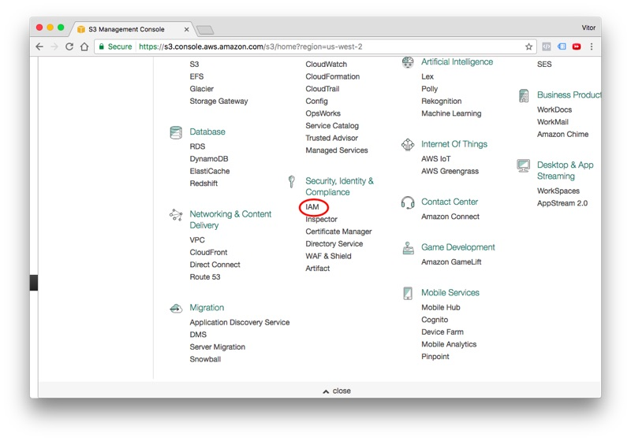
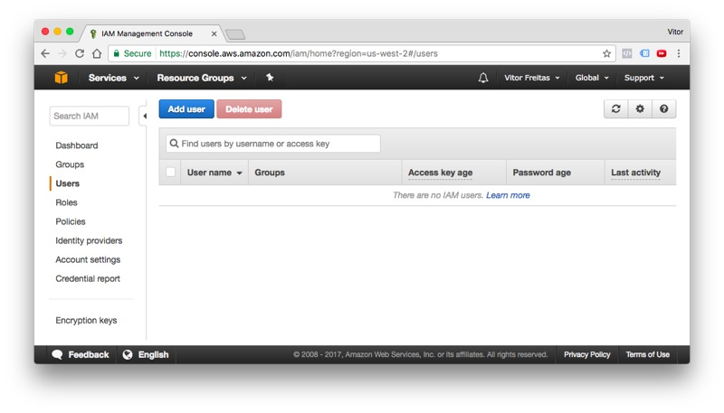
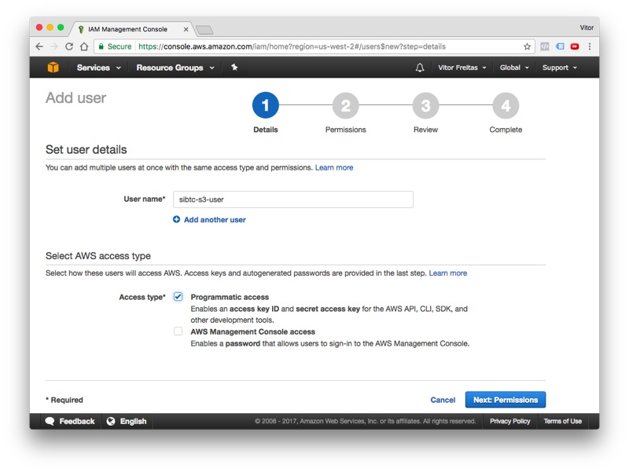
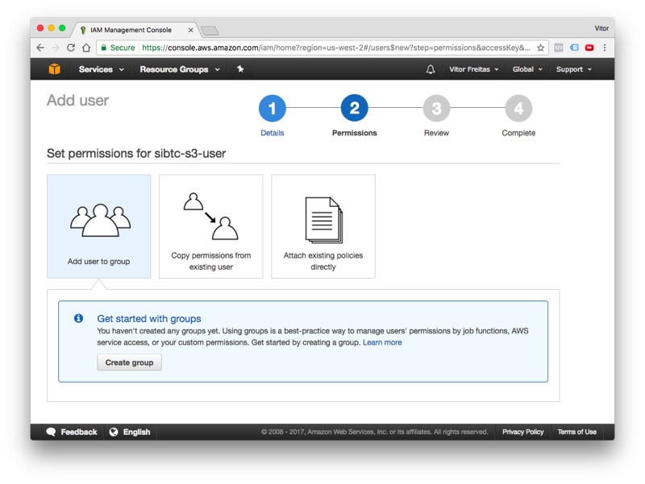
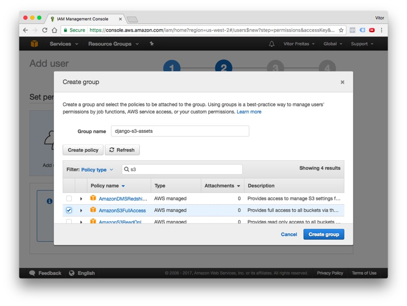
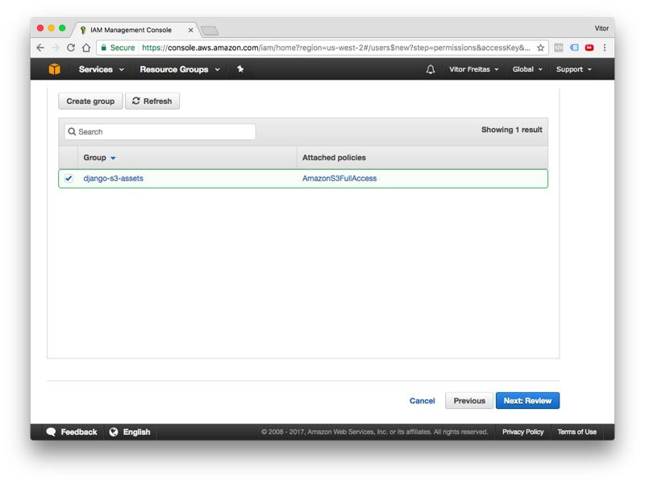
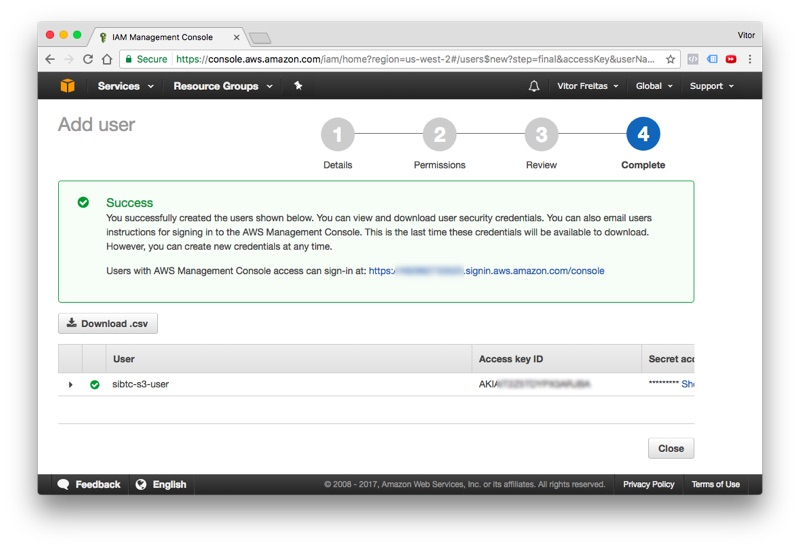
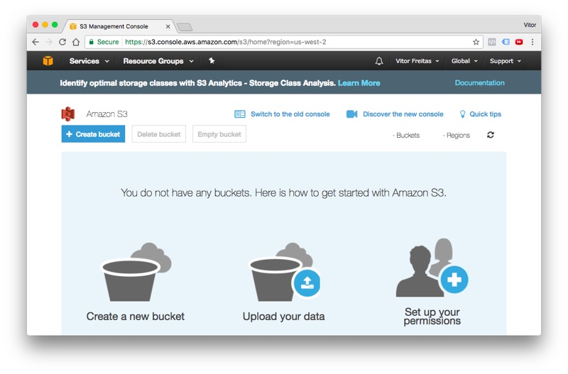
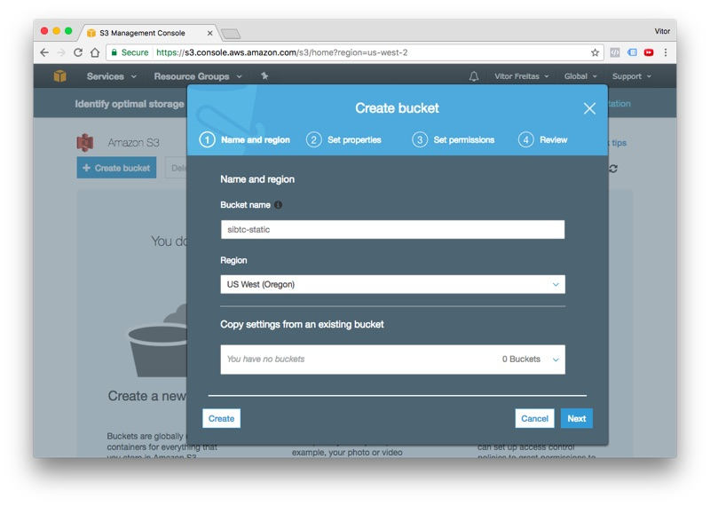
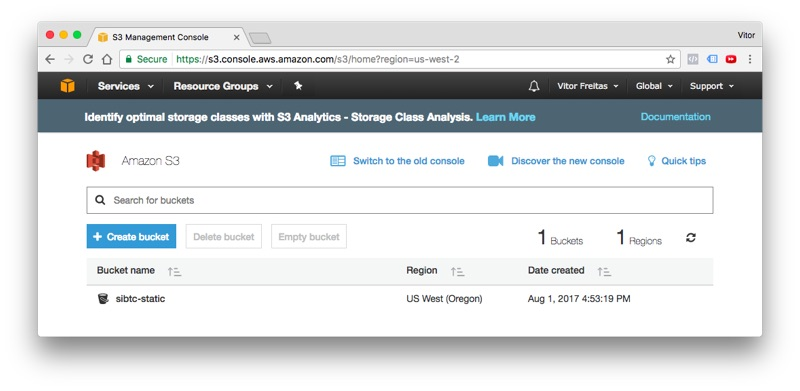

Before we get to the Django part, let’s set up the S3 part. We will need to create a user that have access to manage our S3 resources.
Logged in the AWS web page, find the IAM in the list of services, it’s listed under Security, Identity & Compliance:

Go to the Users tab and click in the Add user button:

Give a user name and select the programmatic access option:

Click next to proceed to permissions. At this point we will need to create a new group with the right S3 permissions, and add ou`r new user to it. Follow the wizard and click in the Create group button:

Define a name for the group and search for the built-in policy AmazonS3FullAccess:

Click in the Create group to finalize the group creation process, in the next screen, the recently created group will show up selected, keep it that way and finally click in the button Next: Review:

Review the information, if everything is correct proceed to create the new user. Next, you should see this information:

Take note of all the information: User, Access key ID and the Secret access key. Save them for later.
Click in the Close button and let’s proceed. Now, it’s time to create our very first bucket.
Bucket is what we call a storage container in S3. We can work with several buckets within the same Django project. But, for the most part you will only need one bucket per website.
Click in the Services menu and search for S3. It’s located under Storage. If you see the screen below, you are in the right place.

Click in the + Create bucket to start the flow. Set a DNS-compliant name for your bucket. It will be used to identify your assets. In my case, I choose sibtc-static. So the path to my assets will be something like this: https://sibtc-static.s3.amazonaws.com/static/.

Leave the remaining of the settings as it is, proceed to the next steps just using the defaults and finally hit the Create bucket button. Next you should see the screen below:
